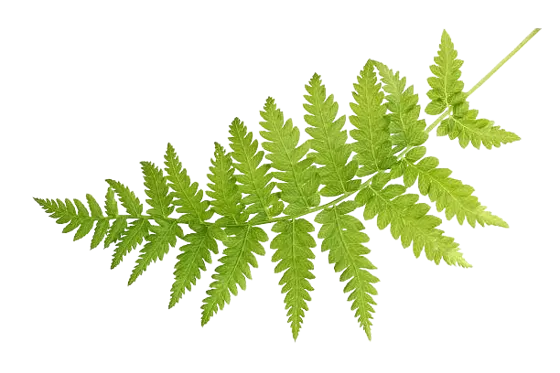

Plant Grimoire
Fern
Fern (Pteridophyta spp.) is a diverse family of non-flowering vascular plants with feathery fronds, found throughout the world.
Magickal Properties
- Gender: Masculine
- Planet: Mercury
- Element: Air
- Deities: Laka, Puck
- Powers: Rain-making, Protection, Luck, Riches, Eternal Youth, Health, Exorcism
Magickal Uses
For protection: Include fronds in vases, plant at the doorstep, or keep indoors to protect the home.
For exorcism and weather: Burn dried fern on coals to drive out spirits. Burned outdoors, it brings rain. The smoke repels snakes and vermin.
For luck and treasure: Carry or wear fern to find treasure. The first frond of spring, broken or bitten, brings good luck and guards against toothache until next spring.
For youth and invisibility: Rare fern "sap" is said to confer eternal youth. The seed, when carried, grants invisibility.
Source Book Notes
- Druid sacred tree: The Druids classed fern as one of their sacred trees; all species give extremely powerful protection.
- Lucky hands: The unexpanded fronds of the male fern are dried over a Summer Solstice fire and kept for protection. These "lucky hands" are rare today.
- Throw fronds on hot coals to send out an aura of protection.
- Rain making: Burn fern outdoors to bring rain.
- Exorcism: The smoke drives away serpents, gnats, and other noxious night creatures of the swamps; also used in incenses of exorcism.
- Gender note: Source lists gender as "Hot and cold, depending upon the intent."
Lore
"Watching the fern" at midnight in perfect silence may bring Puck and a purse of gold.
Meaning When Gifted
When fern is gifted it carries the meaning of magick, fascination, confidence, and shelter.
- Maidenhair Fern: Secret bond of love, discretion
- Royal Fern: Reverie